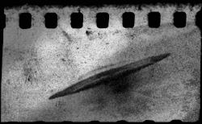

|
Mitch: Hey Joe, this guy Hans was a volunteer in the Waffen SS, told me about an ultra-secret test in Augsburg '44. Joe: No kidding, Mitch? What happened? Mitch: Brought to a military airport, told they'd be executed if they talked. Saw a bell-shaped saucer, floating, with a soft whistle and buzzing. Moved to the runway, rose, changed color, sped off, then came back and landed. Joe: Wow, some story. Think there's any truth to it? Mitch: Just a testimony, but he seemed sincere. Teared up, thanked me, said he'd been waiting to understand. Might've seen the antigravitational Vril 5 prototype. |
|
|  |
|
west. west-northwest. west-southwest. observation. |
|